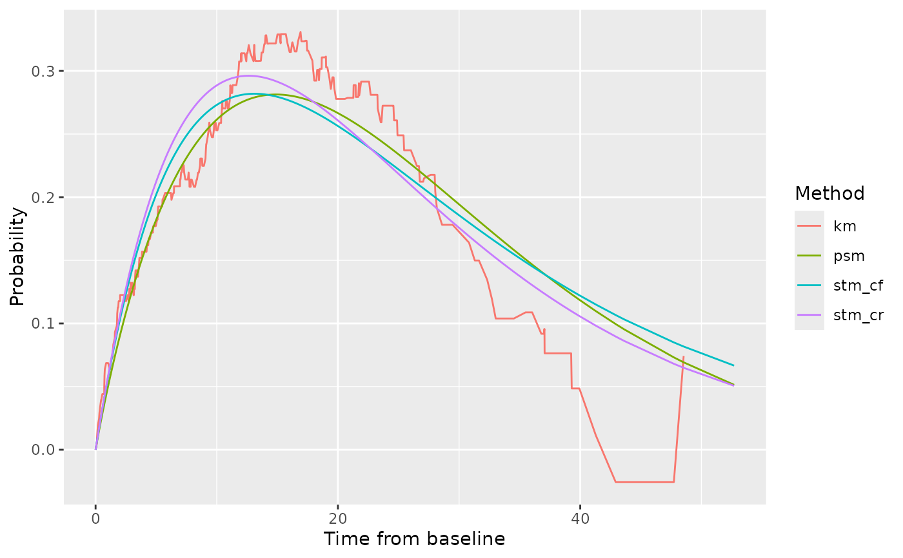

Graph the observed and fitted state membership probabilities for PF, PD, OS and PPS.
Arguments
- ptdata
Dataset of patient level data. Must be a tibble with columns named:
ptid: patient identifier
pfs.durn: duration of PFS from baseline
pfs.flag: event flag for PFS (=1 if progression or death occurred, 0 for censoring)
os.durn: duration of OS from baseline
os.flag: event flag for OS (=1 if death occurred, 0 for censoring)
ttp.durn: duration of TTP from baseline (usually should be equal to pfs.durn)
ttp.flag: event flag for TTP (=1 if progression occurred, 0 for censoring).
Survival data for all other endpoints (time to progression, pre-progression death, post-progression survival) are derived from PFS and OS.
- dpam
List of survival regressions for each endpoint:
pre-progression death (PPD)
time to progression (TTP)
progression-free survival (PFS)
overall survival (OS)
post-progression survival clock forward (PPS-CF) and
post-progression survival clock reset (PPS-CR).
- cuttime
is the cut-off time for a two-piece model (default 0, indicating a one-piece model)
Value
List of two items as follows.
data is a tibble containing data derived and used in the derivation of the graphics.
graph is a list of four graphics as follows:
pf: Membership probability in PF (progression-free) state versus time since baseline, by methodpd: Membership probability in PD (progressive disease) state versus time since baseline, by methodos: Probability alive versus time since baseline, by methodpps: Probability alive versus time since progression, by method
Examples
# \donttest{
bosonc <- create_dummydata("flexbosms")
fits <- fit_ends_mods_par(bosonc)
# Pick out best distribution according to min AIC
params <- list(
ppd = find_bestfit(fits$ppd, "aic")$fit,
ttp = find_bestfit(fits$ttp, "aic")$fit,
pfs = find_bestfit(fits$pfs, "aic")$fit,
os = find_bestfit(fits$os, "aic")$fit,
pps_cf = find_bestfit(fits$pps_cf, "aic")$fit,
pps_cr = find_bestfit(fits$pps_cr, "aic")$fit
)
# Create graphics
gs <- graph_survs(ptdata=bosonc, dpam=params)
gs$graph$pd
#> Warning: Removed 1 row containing missing values or values outside the scale range
#> (`geom_line()`).

# }